Project 2: Fun with Filters and Frequencies
Introduction
In this project, I implemented a variety of classic image processing techniques that explore convolution, edge detection, frequency filtering, and multi-resolution blending. These experiments build intuition on how images can be decomposed into frequency components and recombined to produce compelling effects such as sharpening, hybrid images, and seamless blending.
Part 1: Filters and Edges
Part 1.1: Convolutions from Scratch!
I implemented convolution using four nested loops, then optimized to two loops using NumPy slicing. Padding was implemented with zeros. I compared the results to scipy.signal.convolve2d. Below are comparisons for my portrait:
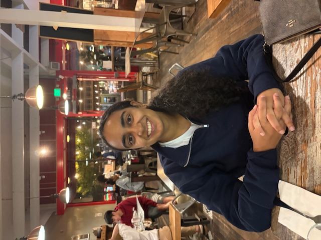Original
Box Filter (2 loops) Box Filter (4 loops) Box Filter (built-in)
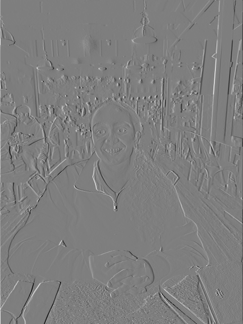Dx Filter (2 loops)
Dx Filter (4 loops) Dx Filter (built-in)
Dy Filter (2 loops) 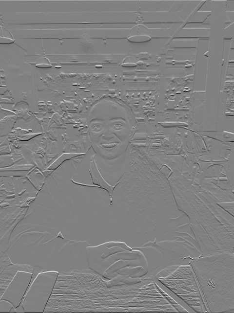Dy Filter (4 loops)
Dy Filter (built-in)
Timing Results
Box Filter: 4 loops = 9.89s, 2 loops = 1.21s, scipy = 0.66s Dx Filter: 4 loops = 0.61s, 2 loops = 1.16s, scipy = 0.0048s Dy Filter: 4 loops = 0.72s, 2 loops = 1.17s, scipy = 0.0060s
Part 1.2: Finite Difference Operator
Cameraman Original Convolved Dx 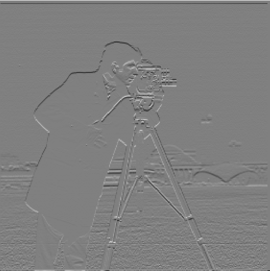Convolved Dy
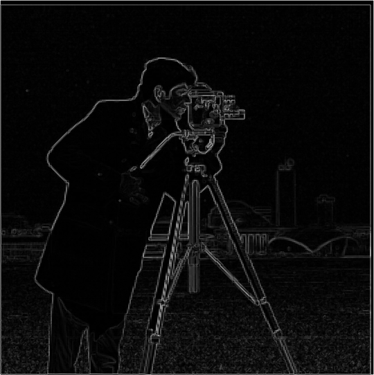Gradient Magnitude
Edge Map (Threshold=0.3)
Gradient Magnitude Edge Map (Threshold=0.3)
Part 1.3: Derivative of Gaussian (DoG)
Original 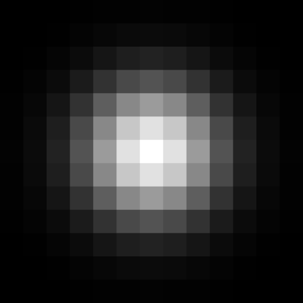Gaussian Filter
Smoothed Dx 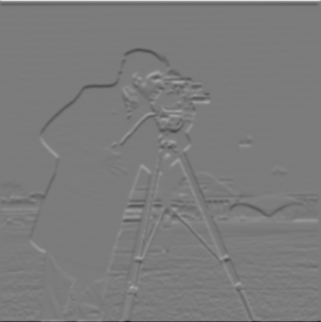Smoothed Dy
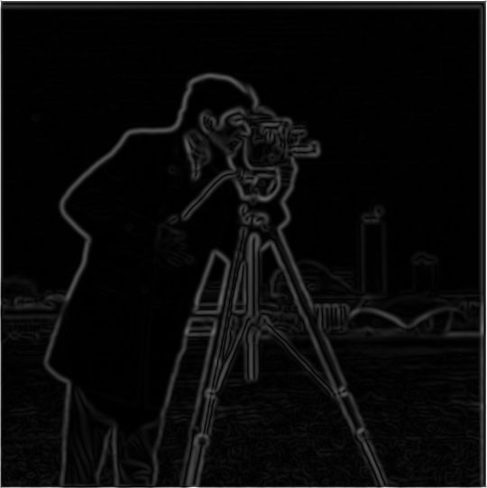Smoothed Gradient Magnitude
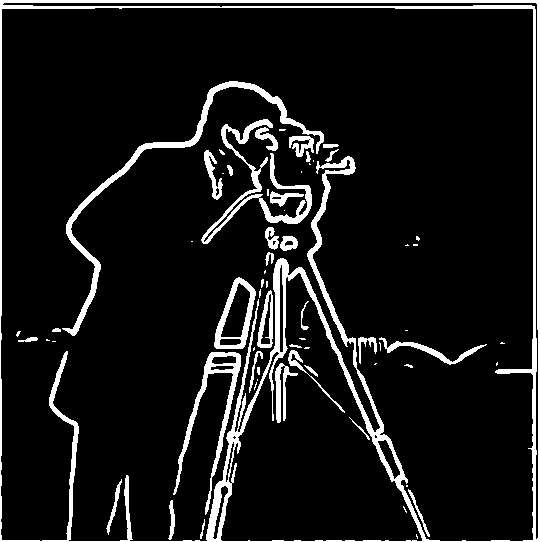Edge Map (Threshold=0.1)
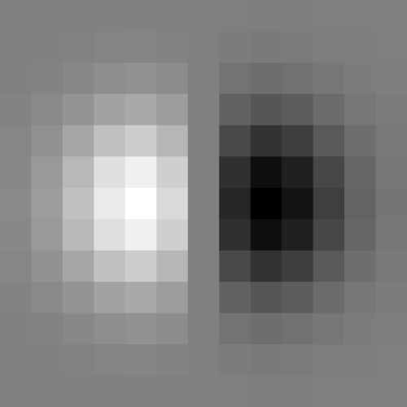DoG x Filter
DoG y Filter Smoothed Dx Smoothed Dy Smoothed Gradient Magnitude Edge Map (Threshold=0.1)
Part 2: Applications of Filtering
Part 2.1: Image Sharpening
Taj Original Taj Blurred Taj High Frequencies
Taj Sharpened (0.5) Taj Sharpened (1) 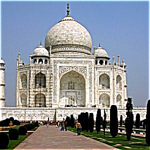Taj Sharpened (2)
Statue Original Statue Blurred Statue High Frequencies
Statue Sharpened (0.5) Statue Sharpened (1) Statue Sharpened (2) Statue Sharpened (5)
Eiffel Original Eiffel Blurred Eiffel High Frequencies
Eiffel Sharpened (0.5) Eiffel Sharpened (1) Eiffel Sharpened (2) Eiffel Sharpened (5)
Part 2.2: Hybrid Images
Derek Original Nutmeg Original 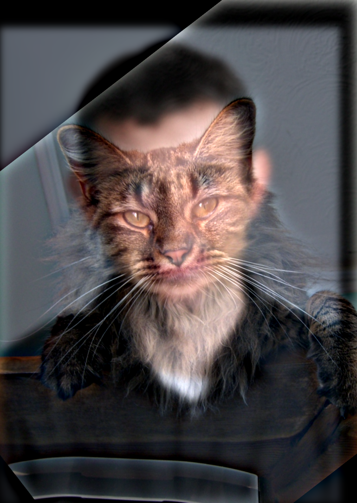Hybrid
Below are images showing the full process:
Derek Aligned 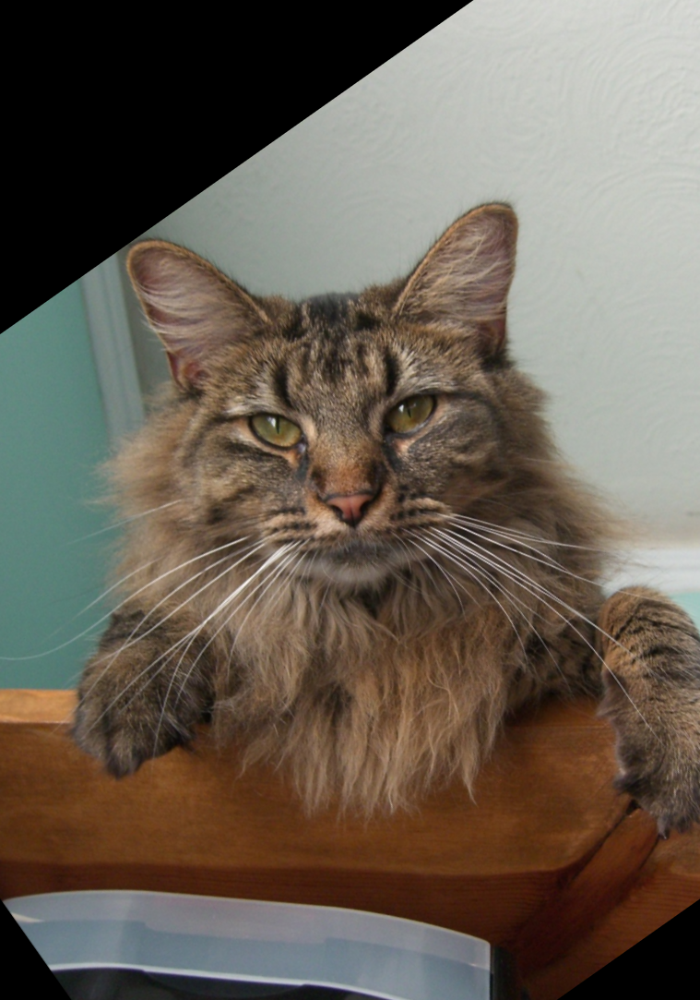Nutmeg Aligned
Derek Low Frequencies 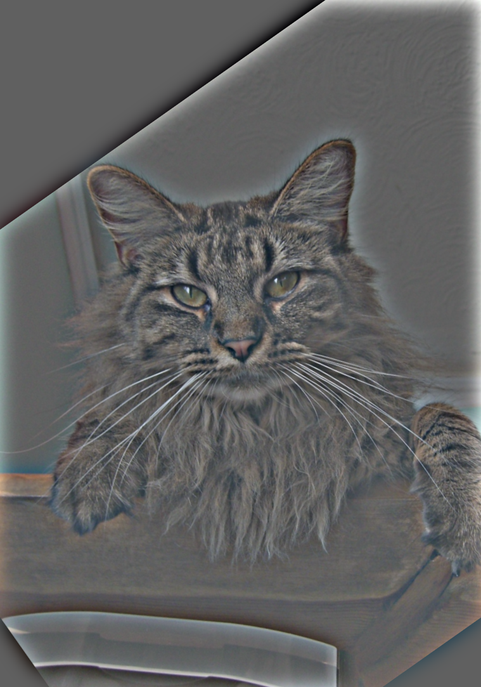Nutmeg High Frequencies
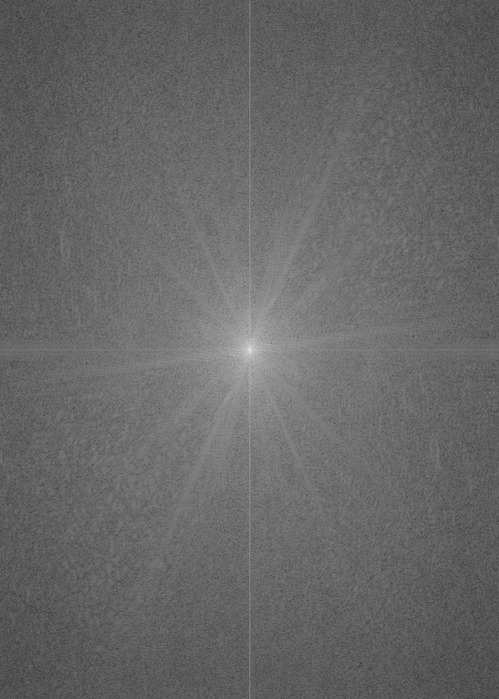Derek FFT
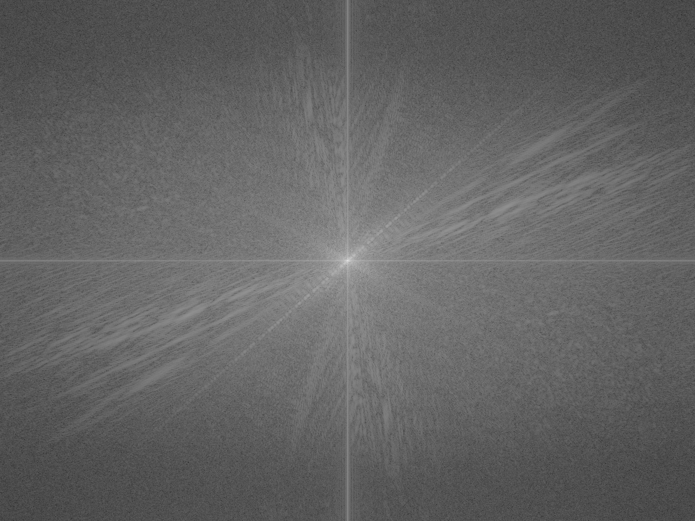Nutmeg FFT
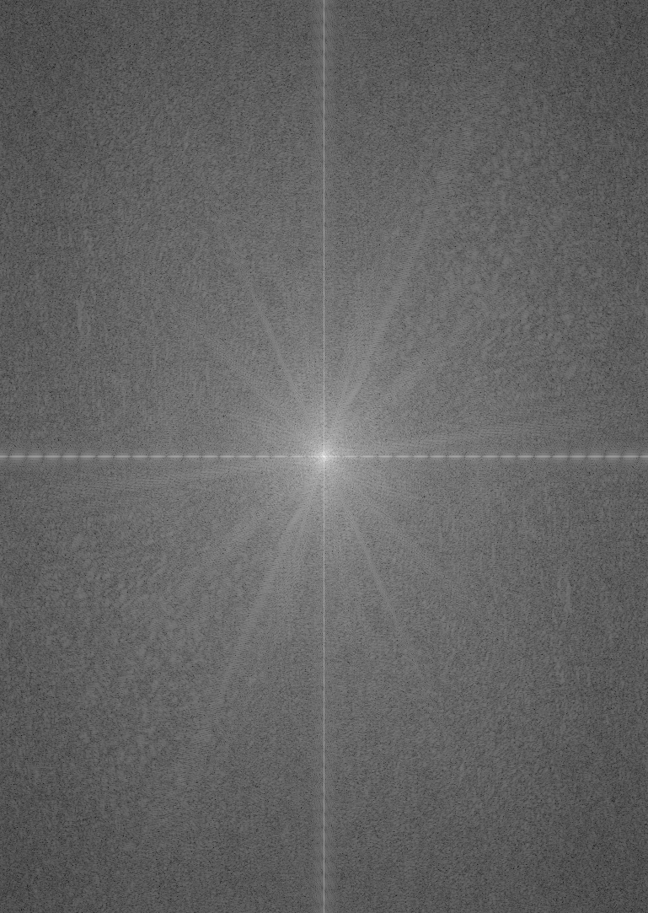Derek Aligned FFT
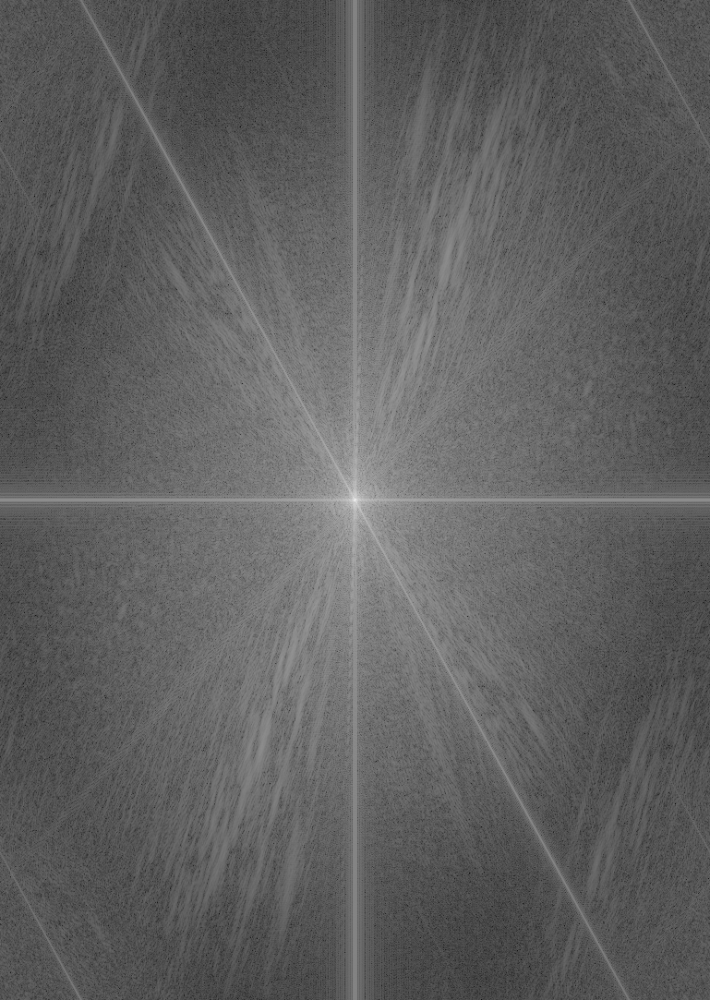Nutmeg Aligned FFT
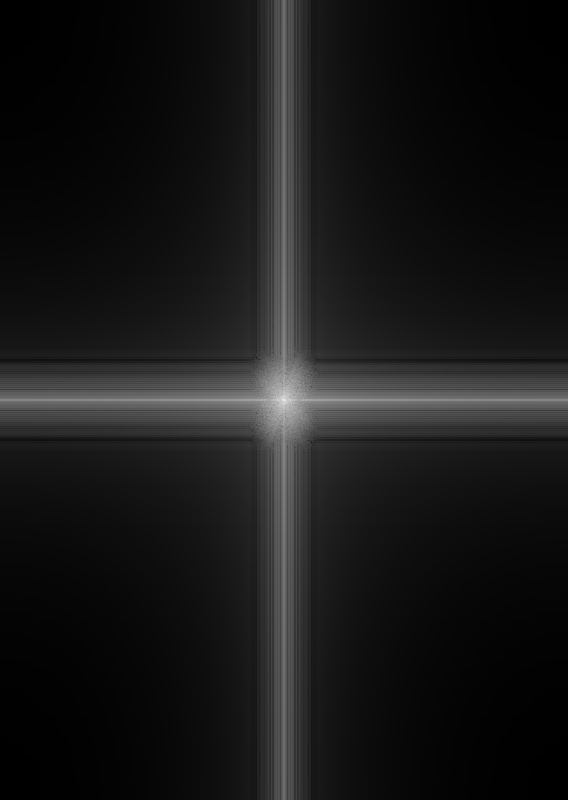Derek Low FFT
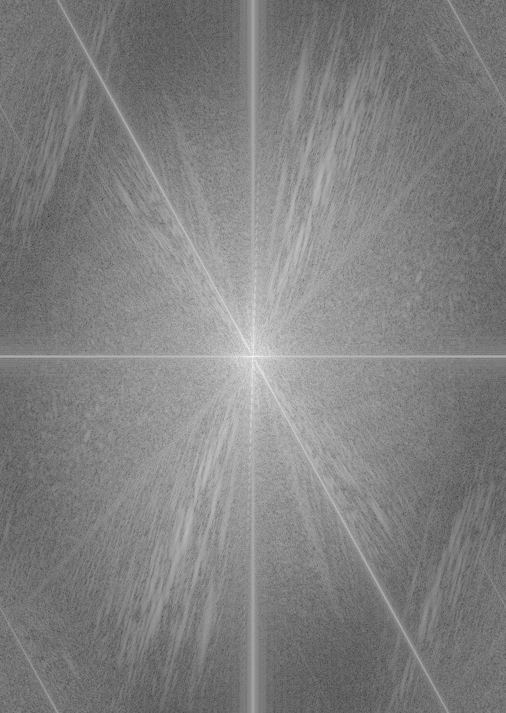Nutmeg High FFT
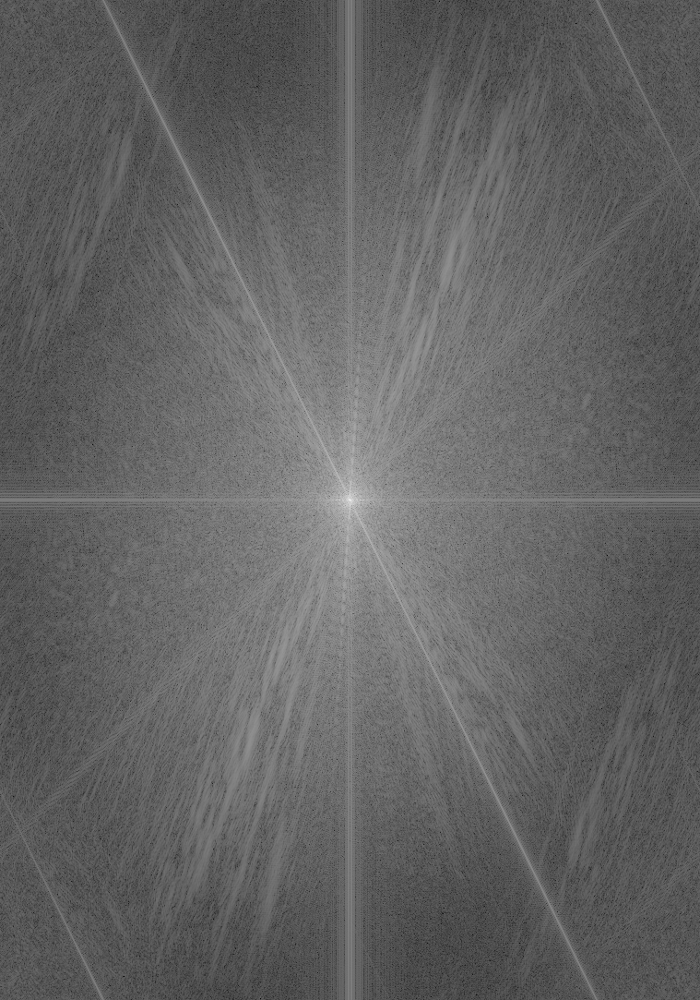Hybrid FFT
Tiger Original Monkey Original 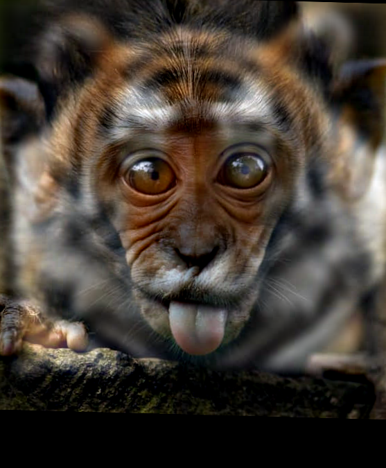Hybrid
Alligator Original Snake Original Hybrid
Part 2.3: Gaussian and Laplacian Stacks
Apple G0 Apple G1 Apple G2 Apple G3 Apple G4 Orange G0 Orange G1 Orange G2 Orange G3 Orange G4 Apple L0 Apple L1 Apple L2 Apple L3 Apple L4 Orange L0 Orange L1 Orange L2 Orange L3 Orange L4
Part 2.4: Multiresolution Blending (Oraple)
Apple L0 Orange L0 Blend L0 Apple L2 Orange L2 Blend L2 Apple L4 Orange L4 Blend L4 Apple Lap stack Orange Lap stack Final blend
Green notebook Blue notebook Blended notebooks
Custom 1 Custom 2 Custom 3